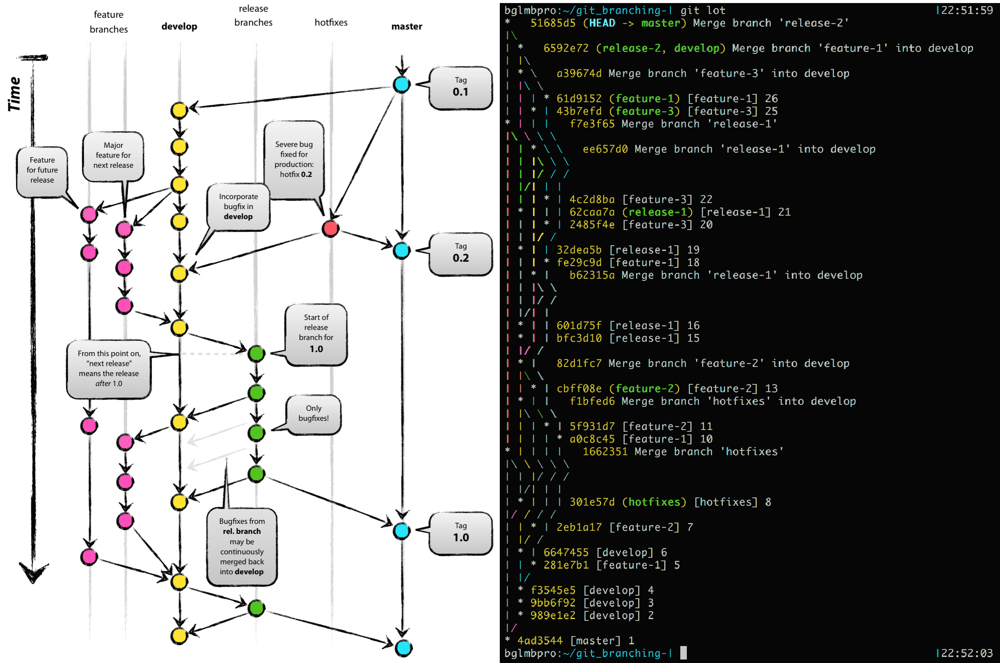
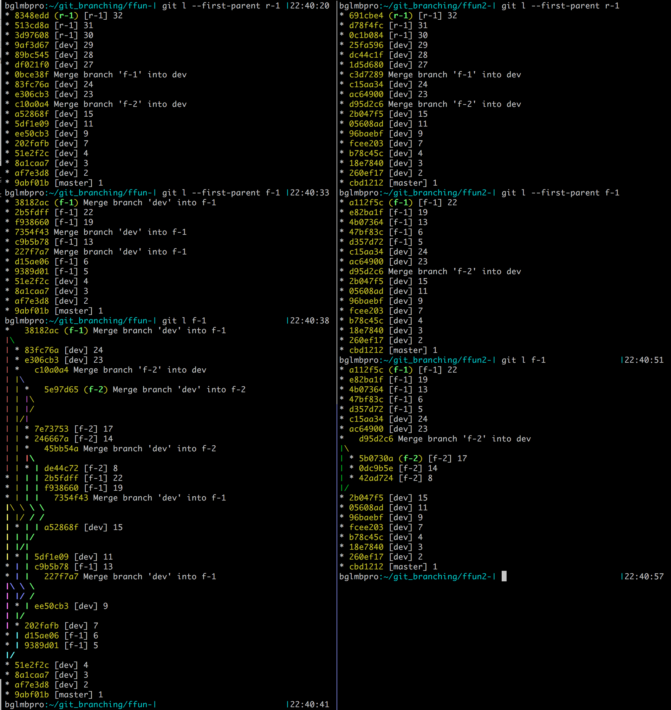

Repository histories¶
Part of the reason to adopt and maintain a branching workflow is to maintain certain patterns in the project history. Remember that git history is really only for humans; git doesn’t care how the commits relate to each other since they are each a complete, stand-alone snapshot of the repository.
Gitflow History¶
So if you adopt the Gitflow workflow, the figure below shows what it will look like in practice. This repository was generated with the gitflow_history.sh.
The figure on the left is the main image from the original Gitflow post (Author: Vincent Driessen. Original post: nvie.com/posts/a-successful-git-branching-model/ License: Creative Commons BY-SA). On the right is the exact history reproduced, with the commits log messages numbered in order of when they were committed. Remember that git log by default shows time progressing upwards, whereas the figure on the left represents time progressing downwards. You might also notice that the branches exist in the same order left to right, but they are mirrored.
A couple of quick notes about reading git’s --graph output. First, at merges,
“|\”, the “\” is the branch being merged into the “|” branch. So reading
from the top (progressing back in time), you can always stay on the “base”
branch by keeping to the left at intersections. This rule doesn’t strictly hold
at initial branchings when reading bottom to top.
Merge vs. Rebase - effects on repo history¶
We already saw a brief summary of git merge vs. git rebase, and there are a few links in the Resources page discussing this as well. If you start to google around, you will find discussions in many places where people disagree about the merits of using merge vs. rebase and the resulting repository histories. There are some more subtle issues (see e.g. here at stake as well, if you really start to get into the nicer features of git.
Personally, I was curious about a specific situation related to the Gitflow model shown above: if I am working on a feature branch forked from the “develop” branch, and I want to stay up to day with develop, should I be merging it into my feature branch or rebasing my feature branch onto develop? (Note: many people will say that well-managed features are short-lived enough that you shouldn’t need to update against the parent branch.)
This figure shows equivalent repository histories, with each branch, commit, and
merge made in the exact same sequence. The difference is that the repo on
the left used git merge to periodically bring “feature-1” and “feature-2” up
to date with “develop,” while the repo on the right used git rebase in place
of git merge. When the feature branches were finished and brought back into
“develop,” git merge was used in both repositories.
Here we can start to see the different sides of the argument. On the left, it is
clear from reading the history exactly how and when each commit got to its
state, showing the divergences and mergings that led to the current repository
state. On the right, we have a cleaner history that shows features branching
from develop and being merged back in. Note that the graph on the right still
uses “--date-order”, but the commit numbers are out of order because
git --rebase rewrites history, replaying commits onto the target branch tip at
the time it is called. So we can see that “feature-2” was finished (merged)
before “feature-1”, but there isn’t a good way (without digging into the commit
timestamps) to know at the commit level what order development took place among
feature-1, feature-2, and develop.
Once repositories start to get significant amounts of history and branches, no
matter which method you adopt, the full repo history is going to get longer and
more complicated to read (although the rebasing version might remain relatively
shorter/simpler, albeit at the loss of some information about branch-local
contexts). A lot of times, you just want to know how a certain branch got into
its current state. This is where the “--first-parent” option can help. The
next screenshot shows
- with the first command the effect of
--first-parentto explore the “release-1” branch. We see that “feature-1” is part of release-1’s history, so we want to know more about “feature-1” - then the second command uses the same feature to get more detail about “feature-1.”
- Finally, the third command shows the complete history of “feature-1” by
dropping the
--first-parentoption.
These are the same repositories as in the previous screenshot: the merging history is on the left again, and the rebasing history is on the right.
A viable policy¶
``git config [--global] pull.rebase true``
So which do I personally choose, git merge or git rebase?
I think that seeing merges can give useful context like, “oh, this commit is
from a branch that was started back when the API was different, and it hadn’t
yet pulled in the updated policies.” So when updating branches with information
from others, and when reintegrating branches into a higher-up (more stable)
branch, I like to use git merge --no-ff.
However, I prefer to use git rebase for a situation not covered yet on this
page: when using git pull. This is because git pull is almost always used on
tracking branches, and branches track each other almost always because they are
semantically the same: they just live in different repositories. So using
git pull --rebase prevents all of the merge messages in a history that just
say, “Merge branch origin/feature-1 into feature-1” from all of the different
people working on it. These merge messages DO unnecessarily clutter the history
and make it more difficult to read. And when rebase is limited to tracking
branches like this, it doesn’t make that branch’s history any less clear (in my
opinion) because it is almost never important that two commits on the
(functionally) same branch happened in two different repositories.
A less verbose way to look at git pull --rebase: it has the same end effect on
your history as if you had remembered to do a normal git pull as always before
making any local changes to your repository.
You can set this behavior as default for a user (goes into ~/.gitconfig) by
running git config --global pull.rebase true, or for a repository (goes into
.git/config) by running git config pull.rebase true.
If you can think of reasonable exceptions to the situations explained above, then your understanding of branching, merging, and rebasing is probably sufficient enough to justify your own opinions on the matter. :-)
Merge commits in pull requests¶
Another issue that commonly comes up when using something like the Gitflow
workflow is merge commits in pull requests. This happens when somebody is
working in their topic branch, develop advances, and they want to pull in
those new developments into their topic branch while they are working.
These merge commits will show up in the PR on Github, as shown below: .. image:: /git/github_starting_situation.png
There are a few options for dealing with this situation, which I will try to
outline here. First, let’s set up a toy repository so that we can see how the
resulting history changes based on the option we pick. The starting situation on
the user’s local machine at the time they submit the pull request on the
test_github branch might look like the following (I changed the commit messages
of 3654867 and f8a26aa from the Github screenshot above to be more clear):
* f8a26aa (HEAD -> test_github, origin/test_github) topic change after update with master
* 478e332 Merge branch 'master' into test_github
|\
| * f70e459 (origin/master, origin/HEAD, master) intermediate change on master
* | 3654867 topic change pre update with master
|/
* df26096 Merge pull request #3 from grahamlopez/readme_init
|\
| * 0911734 (origin/readme_init) another change
| * 520e2de added a little test c file as well
| * bcfd63e initialized the README.md
|/
* 9fef690 Initial commit
Notice the sequence of events:
- commit
3654867happens first in thetopicbranch - somebody meanwhile makes a change to
master masteris merged into the topic branch (producing a merge commit)- another commit is made to
topic - (PR is submitted on the
topicbranch)
1. PR with merge commits¶
One option is to just accept the PR as it stands, with the merge commits in
tact. This will preserve the most complete history, and so is suitable for some
situations where maximum detail is needed. After merging the PR and updating the
new master, the local history will look like this:
* 0bfcfd2 (HEAD -> master, origin/master, origin/HEAD) Merge pull request #7 from grahamlopez/test_github
|\
| * f8a26aa (origin/test_github, test_github) topic change after update with master
| * 478e332 Merge branch 'master' into test_github
| |\
| |/
|/|
* | f70e459 intermediate change on master
| * 3654867 topic change pre update with master
|/
* df26096 Merge pull request #3 from grahamlopez/readme_init
|\
| * 0911734 (origin/readme_init) another change
| * 520e2de added a little test c file as well
| * bcfd63e initialized the README.md
|/
* 9fef690 Initial commit
As you can see, this shows exactly what happened, but starts to look a little messy. Even if the above example is easy to understand, extrapolate this out to multiple topic branches and PRs that become intertwined with various merge commits, etc.
2. Locally rebased¶
This option involves asking the user to run a few commands to fix up their PR.
They will rebase their work onto the new work in master, even though they’ve
already merged it into their topic branch. During the rebase, the changes unique
to the topic branch will get replayed onto master’s tip, and the merge commit(s)
will disappear. When the user’s repo is locally rebased using git checkout test_github,
then git rebase master, it looks like the following:
* 7dfb8aa (origin/test_github, HEAD -> test_github) topic change after update with master
* b9de60f topic change pre update with master
* f70e459 intermediate change on master (origin/master, origin/HEAD, master)
* df26096 Merge pull request #3 from grahamlopez/readme_init
|\
| * 0911734 (origin/readme_init) another change
| * 520e2de added a little test c file as well
| * bcfd63e initialized the README.md
|/
* 9fef690 Initial commit
A force push on the topic branch to update the PR submitter’s Github fork will now be necessary, and the PR will be updated automatically. After it is merged and the local master is updated, the repo history will look like the following:
* 833a97b (HEAD -> master, origin/master, origin/HEAD) Merge pull request #6 from grahamlopez/test_github
|\
| * 7dfb8aa (origin/test_github, test_github) topic change after update with master
| * b9de60f topic change pre update with master
|/
* f70e459 intermediate change on master
* df26096 Merge pull request #3 from grahamlopez/readme_init
|\
| * 0911734 (origin/readme_init) another change
| * 520e2de added a little test c file as well
| * bcfd63e initialized the README.md
|/
* 9fef690 Initial commit
Notice that now there is a merge commit, but it is the normal kind that is usually desired when working with a pull request workflow. Rebasing “rewrote history,” so now it looks like the “pre” and “post” commits both happened after the “intermediate” commit on master, even though this isn’t the sequence that really took place.
3. Github’s “Merge + Rebase” button¶
Github also provides a solution to this. If you click the dropdown arrow on the
“Merge” button on the commit, you will see an option for “Merge + Rebase.” This
is nice because you don’t have bug the PR submitter about anything and you can
just accept the PR if the code is ready for merging. After this is done and
master is updated, the local history will look like this:
* ea624c7 (HEAD -> master, origin/master, origin/HEAD) topic change after update with master
* 9d9dfad topic change pre update with master
* f70e459 intermediate change on master
* df26096 Merge pull request #3 from grahamlopez/readme_init
|\
| * 0911734 (origin/readme_init) another change
| * 520e2de added a little test c file as well
| * bcfd63e initialized the README.md
|/
* 9fef690 Initial commit
Here, we don’t get the nice merge commit for the PR like we did with the locally-rebased option #2 above; it just looks like all of the development happened directly on master.
Note that in the rebase scenarios, even though git log will still show the
correct commit times, the --date-order option does not seem to help in actually
displaying these in the correct sequence.
gitflow_history.sh¶
This is a script that will generate the history shown above:
#!/bin/bash
counter=1
commit () {
git checkout $1
if [ -e "${1}_log" ]
then
echo "$commit #$counter from [$1]" >> ${1}_log
git add ${1}_log
else
echo "$commit #$counter from [$1]" >> ${1}_log
fi
git commit -a --allow-empty -m "[$1] $counter"
counter=$((counter+1))
sleep 1
}
new_branch () {
git checkout $1
git checkout -b $2
}
merge () {
git checkout $1
git merge --no-ff --no-edit $2
counter=$((counter+1))
sleep 1
}
rebase () {
git rebase --keep-empty $1 $2
counter=$((counter+1))
sleep 1
}
git init
echo "started master_log at commit #$counter" >> master_log
git add master_log
commit master
new_branch master develop
commit develop
commit develop
commit develop
new_branch develop feature-1
commit feature-1
commit develop
new_branch develop feature-2
commit feature-2
new_branch master hotfixes
commit hotfixes
merge master hotfixes
commit feature-1
commit feature-2
merge develop hotfixes
commit feature-2
merge develop feature-2
new_branch develop release-1
commit release-1
commit release-1
merge develop release-1
commit feature-1
commit release-1
new_branch develop feature-3
commit feature-3
commit release-1
commit feature-3
merge develop release-1
merge master release-1
commit feature-3
commit feature-1
merge develop feature-3
merge develop feature-1
new_branch develop release-2
merge develop release-2
merge master release-2